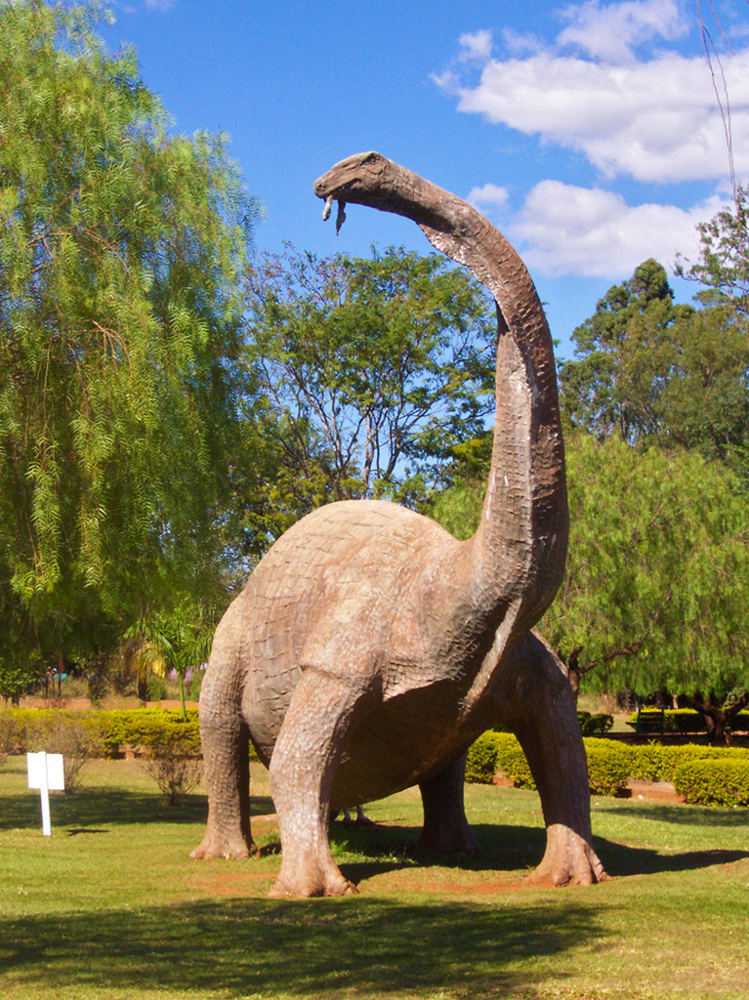
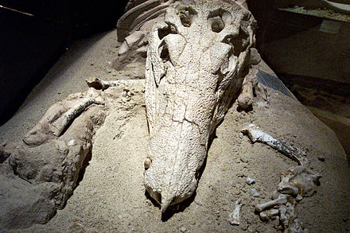

Curiosidades
Origem do nome
- 
A "linha do Catalão", pertencente à Companhia Mogiana de Estradas de Ferro, foi a primeira ferrovia a chegar ao Triângulo Mineiro, alcançando Uberaba em 1889. No trecho entre as cidades de Conquista e Uberaba, havia uma pequena estação chamada originalmente de "Cambará", que recebeu o nome de Peirópolis em 1924.
Surgimento do bairro
O surgimento do bairro de Peirópolis está relacionado ao imigrante espanhol Frederico Peiró, que em 1911 estabeleceu duas fábricas de cal virgem utilizando o calcário da região. A localidade ganhou importância econômica ao comercializar o produto através da ferrovia, principalmente para o estado de São Paulo..
- 
Descobertas

A partir da década de 1940, foram feitas descobertas paleontológicas que trouxeram uma nova notoriedade para a região. Após receber informações de que fósseis de ossos foram encontrados durante as obras de retificação da linha da Companhia Mogiana, o paleontólogo gaúcho Llewellyn Ivor Price (1905-1980) iniciou seu trabalho em Peirópolis em 1947. Ele conduziu uma escavação sistemática na região de Caieira entre 1949 e 1961. Como resultado, centenas de ossos fossilizados do período Cretáceo Superior (100 a 65 milhões de anos atrás), principalmente de dinossauros do grupo dos titanossauros, foram recuperados.